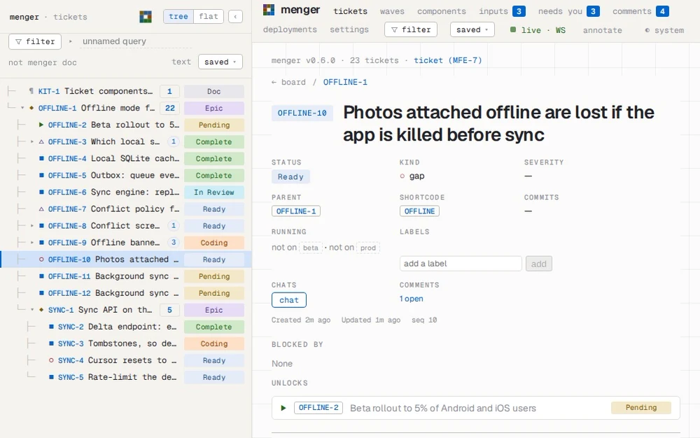
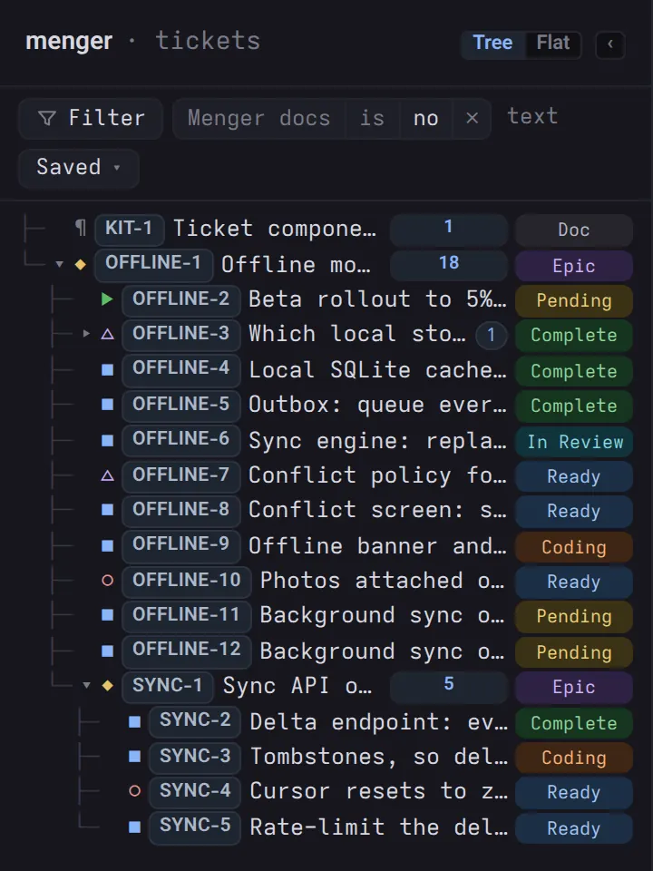
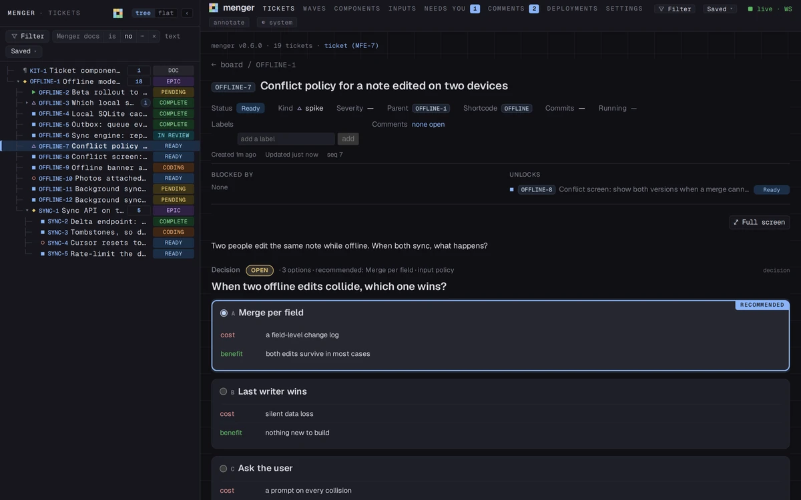

You promote.
Nothing starts until a person says so.
Pending→Ready
For software teams of people and AI agents
You decide what is ready. People and agents claim it over the same wire. Every screen shows it as it happens.
open source · MIT licence

Nothing starts until a person says so.
Pending→Ready
Coding the moment it starts; nothing is picked up twice.
Ready→Coding
Every open screen shows it the same instant.
In review→Complete
Work breaks down until a piece fits one person or one agent; what it produces is filed beneath it.
Tickets and kinds
Everything menger does is a method on one connection; the app has no side door. Anything you can click, an agent can call.
The command line# claim it, do the work, hand it over
synapse -P 4455 menger tickets set_status --id OFFLINE-10 --status Coding
synapse -P 4455 menger tickets link_commits --id OFFLINE-10 --commits a7c31f0
synapse -P 4455 menger tickets set_status --id OFFLINE-10 --status 'In Review'A ticket asks the owner right there, each option with its cost; the answer stays with the work.
Inputs
Every build is on the latest release page.
cargo install menger --features embedded-appThen open 127.0.0.1:4456.
Which file, the first-open warning, running your own: the guide →